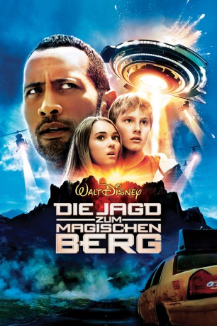

#7295 Die Jagd zum magischen Berg
Alternativ: Race to Witch Mountain
 
 IMDB-Wertung: 5.7 / 10
IMDB-Wertung: 5.7 / 10  Metascore: 0
Metascore: 0 
Taxifahrer Jack Bruno kutschiert den lieben langen Tag Touristen den Las Vegas Strip rauf und runter. Das Ziel ist immer das gleiche: Planet Hollywood. Der Ex-Häftling, der früher für den hiesigen Mafia-Boss Autorennen bestritt, langweilt sich dabei zwar zu Tode, ist jedoch entschlossen auf dem rechten Weg zu bleiben. Eines Tages steigen zwei blonde Teenager in Jacks Taxi und drücken ihm 15.000 Dollar in die Hand, damit er sie zum „Witch Mountain“, dem titelgebenden magischen Berg, bringt.
Jahr: 2009
Dauer: 98 Minuten
FSK: 12
Land: USA Studio: Walt Disney Studios Motion PicturesTonspuren: DTS - ,
Untertitel: Deutsch,
Auflösung: 1080p (1920x800) Größe: 9902 MB
Genre: Action, Thriller, Sci-Fi, Abenteuer, Fantasy, Familie
Regisseur: Andy Fickman
Drehbuch: Matt Lopez
Soundtrack:
Darsteller:
 Dwayne Johnson als Jack Bruno
Dwayne Johnson als Jack Bruno AnnaSophia Robb als Sara
AnnaSophia Robb als Sara Alexander Ludwig als Seth
Alexander Ludwig als Seth Carla Gugino als Dr. Alex Friedman
Carla Gugino als Dr. Alex Friedman Ciarán Hinds als Burke
Ciarán Hinds als Burke Tom Everett Scott als Matheson
Tom Everett Scott als Matheson Chris Marquette als Pope
Chris Marquette als Pope Billy Brown als Carson
Billy Brown als Carson Garry Marshall als Dr. Donald Harlan
Garry Marshall als Dr. Donald Harlan- Kim Richards als Tina
 Ike Eisenmann als Sheriff Antony
Ike Eisenmann als Sheriff Antony Tom Woodruff Jr. als Siphon
Tom Woodruff Jr. als Siphon- Bob Koherr als Marty
- Kevin Christy als Matt
 Bob Clendenin als Lloyd
Bob Clendenin als Lloyd- Bryan Fogel als Imperial Stormtrooper Gray
- Robert Torti als Dominick
 John Kassir als Chuck
John Kassir als Chuck- Beth Kennedy als Stenftenagel
- Jonathan Slavin als Gallagher
 Harry S. Murphy als Analyst D. Pleasence
Harry S. Murphy als Analyst D. Pleasence- Thomas Conroy als General E. Albert
 Meredith Salenger als Natalie Gann
Meredith Salenger als Natalie Gann- Suzanne Krull als Gail Ross
 Christine Lakin als Sunday
Christine Lakin als Sunday- Corri English als Herself, Brokedown Cadillac
 Omar J. Dorsey als Police Officer Hough
Omar J. Dorsey als Police Officer Hough- Paul Nygro als Teddy Tentacles
- Brandon Scott Miller als Hendricks
 Dennis Hayden als Ray
Dennis Hayden als Ray- Shengyi Huang als Shira the UFO Huntress
- Christina Wun als Fem-Alien #2
 Cheech Marin als Eddie
Cheech Marin als Eddie- Len Anderson IV als NORAD Analyst , uncredited
 Joey Bell als Gambler , uncredited
Joey Bell als Gambler , uncredited- Nathaniel Best als Black Ops Soldier , uncredited
 David Cohen als Bus Driver , uncredited
David Cohen als Bus Driver , uncredited- Hugh Daly als Black Ops Soldier , uncredited
- Cindy Gold als Alien , uncredited
 Gilley Grey als Country Dancer #1 , uncredited
Gilley Grey als Country Dancer #1 , uncredited- Lanette Fugit Hannah als Alien , uncredited
- Victor Harris als Black Ops Soldier , uncredited
 Waymond Lee als Space Conventioneer , uncredited
Waymond Lee als Space Conventioneer , uncredited- Natalina Maggio als Convention Anime Character , uncredited
- Greg Maness als Black Ops Soldier , uncredited
- Ryan McBay als Black Ops Soldier , uncredited
- Marilyn Monrovia als Country Dancer #2 , uncredited
- Lee Reherman als Lieutenant Gunn , uncredited
- Kyle Shaw als Black Ops Soldier , uncredited
- Delia Sheppard als Highroller , uncredited
Datei: X:\2009(G-M)\Jagd zum magischen Berg, Die (2009, FSK12, 1920x800).mkv seit 15.10.2017
Festplatte: HD 2009(G-Z)-2010(A-F)
 Es gibt insgesamt 82 Filme in der Gruppe '2009(G-M)'
Es gibt insgesamt 82 Filme in der Gruppe '2009(G-M)'